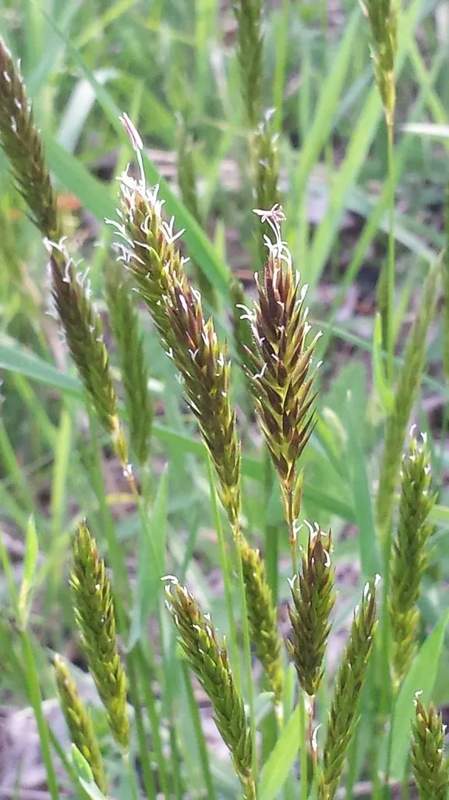

哺乳动物 · 动物界
美洲野牛 Bison bison

北美洲体型最大的陆生动物，肩部隆起、头颈长满厚毛，曾从数千万头锐减至数百头，如今种群正在恢复。
- 分类
- 门脊索动物门纲哺乳纲目偶蹄目科牛科属野牛属
- 栖息环境
- 北美洲大草原与疏林地带，偏好开阔的草地
- 地理分布
- 北美洲，从加拿大到美国、墨西哥北部的草原与保护区
- 保护级别
- IUCN 近危（NT）
物种志
美洲野牛体长 2.0–3.5 米，肩高 1.5–2.0 米，体重 400–1000 kg，雄性明显大于雌性，是北美洲体型最大的陆生动物。它的前躯巨大，肩部高耸隆起，头、颈和肩部覆有厚厚的深褐色长毛，后躯毛发较短、颜色较浅；雌雄都长有短而向上弯的角。
美洲野牛分布于北美洲的大草原和疏林地带，从加拿大到美国、墨西哥北部，曾在北美大草原上形成数千万头的庞大种群，随着 19 世纪的大规模猎杀，数量一度锐减至数百头。它们结成雌牛与幼牛的群体，雄牛独居或成小群，冬季用头部和蹄子扫开积雪取食枯草，并沿固定的“野牛道”迁徙。美洲野牛是北美草原生态的关键物种，翻土、啃食和粪便影响植物群落；雌兽妊娠期约 9 个月，每胎 1 仔。经过保护，目前种群已恢复到数十万头。
形态与习性
- 食性以草为主，冬季用头和蹄扫雪取食枯草
- 体长2.0–3.5 m，肩高 1.5–2.0 m
- 体重400–1000 kg，雄性明显大于雌性
- 寿命野外约 15–20 年
- 繁殖妊娠期约 9 个月，每胎 1 仔
- 社会结构雌牛与幼牛成群，雄牛独居或成小群
- 历史数量19 世纪曾从数千万头锐减至数百头
趣味知识
- 19 世纪美洲野牛曾从数千万头锐减至数百头，如今已恢复。
- 它的头颈和肩部覆盖厚毛，后躯毛发较短，前重后轻。
- 冬季野牛用头部和蹄子扫开积雪，取食下面的枯草。
- 野牛翻土、啃食和粪便会影响草原植物群落结构。